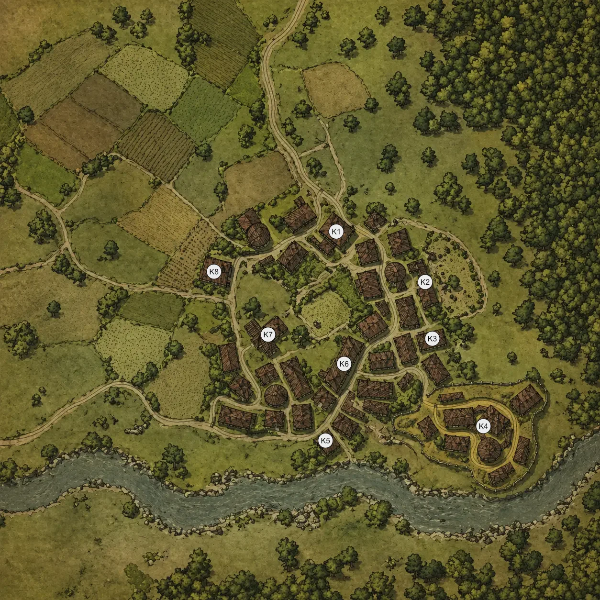

Land of Sain: Kerdrim
Today I was thinking about starting to introduce situations – the proto-scenarios not including any overarching plats, but conflicts, that interweave with each other. As many, today I start small with a temperate hamlet/village of Kerdrim, a few hours of travel from regional capital Jelentar – the city of Damned and Saints. The introduction of the rest of Land of Sain will be done at a later date.
The town can be found on the continent of Sain – devastated by many calamity, humanity has once again prevailed and now with the fall of magic, which is slowly withering for some unknown reason and rise of technology is slowly rebuilding itself piece by piece.
While being much more peaceful than the capital, it still holds it secrets and tension may grind the normality to the halt. In this article I will provide you reader with 8 locations, all having their unique hooks, to help you piece your story together. Below I provide the map of the hamlet and later I will describe each of marked locations.

Locations
K1: The first thing that welcomes you to Kerdrim while entering is the local Inn, that was not named, as it was not needed in such a small town. The owners are a middle aged couple: Female Giant Descendant Lorreine Desworth and her husband Male Shortfolk Tirvald Desworth. The Inn brings many shady people, yet these two due to their prior adventuring experience manage to keep them in check (at least most of the time). Lorraine is a big grizzled woman, with many scars, that she wears proudly, while her husband is much smaller in stature and a little chubby and whimsical.
Despite being welcoming people these two carry burdens of many daring adventures in the past, some more evil than the others, and they constantly look over the shoulder, afraid of their past catching up ot them one day.
K2: This is an abandoned warehouse, whose owner has disappeared and now it is a hiding place for a few of the bandits that have appeared here in a recent years, with the rumors of the artifact being somewhere nerby. These bandits are led by an old former knight, now robber baron Undrik Balseis, who has his eyes set on a treasure and if someone will try to go for it he will try to either stop or use them for his gains. While not hostile with the local populous, they are not friendly either, as they keep the neutrality to not mess up their plans.
K3: Here we have a bathhouse built on a natural hot spring, where the town’s residents come to relax. It is kept up by the people of the town and many local rumors and legends can be found here – some more true than the others. Many people come here to unwind, as the town is largly founded by hunters, a place like this provides a good respite after a hard and long day of work.
One of the rumors here is related to mysterious murder spree in Jelentar, which strangly targets only those of elven blood and the culprit(s) always disappear without a trace, leaving the city guard and the church puzzled.
K4: The Kerdrim Fort is the point from which the city originated, now watching over it with a quite competent town guard. After the incidents of yesteryear the entire guard was replaced after a mysterious brutal monster massacred 5 civilians on a killing spree. Now the Lords of Jelentar themselves have sent a unit of Marines to guard the city with the officer Qeris Veilmon leading her troops. They have integrated nicely and are no strangers to adventurers, so they often are more lenient than the usual town guard.
Now the main issue is the search for a townsfolk with her child that disappeared some time ago, leaving the father of the family worried and the guard grasping for any clues, which there aren’t many. All that is known is that they went to the supposed Valley of Flowers – a place in the forest to the east, where only flowers grow, no trees, no grass, no moss – just flowers.
K5: The blacksmith: Aedern Rees resides here. He is a skilled craftsman capable of crafting +1 gear, which seems almost magical, yet he takes no apprentices and does not share anything about his craft drawing suspicion from the residents of Kerdrim, as he has arrived less than 12 years ago.
K6: The local general store mixed with the warehouse. Many people come in and out, constantly moving gold, wares and rumors from all around the region. Recently people from Jihhar Standard Company have been trying to quietly take over this place under a false banner, as their presence is not welcome in the region, due to their reputation from forcefully squeezing all the profit they can from people – even with force and coercion.
K7: Here lies the old and decrepit church of Kerdrim where no god is worshiped. Not that long ago the old local priest have walked off into the forest and disappeared, being replaced with a young Deerfolk named Lindor Ed’Erthra, who seems different to local folk, but nonetheless he keeps up the building and aids people in need.
Behind the mask of a respected member of the clergy hides a sinister plan, with the rumors of the powerful artifact here Lindor appeared to take it’s power for himself even trying to get on the bandits’ good side. But he needs to act fast, as he knows that the priest he disappeared will be noticed by the church authorities sooner or later.
K8: The house of Cevia Eris – the Constable of Kerdrim. She is a middle aged Elven woman, who has been here since the village was established, but she has not been seen in a few weeks, as she has closed herself in her house and told people not to disturb her.